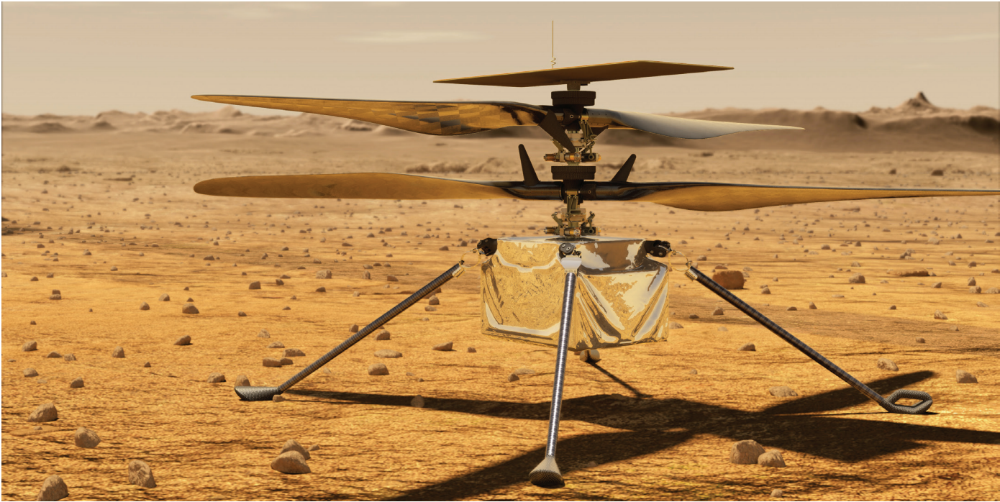

Mars Rover 2020:
Mars Helicopter

Description
Le Mars Helicopter va voyager avec le Mars Rover 2020. Il est 1,2 mètres (4 pieds) de longueur et 1,8 kilogrammes (4 poids), avec un système de rotor qui tourne 2 400 révolutions par minute. Son équipement inclut: des détecteurs inertiels, un altimètre au laser, deux caméras (en noir et blanc, et en couleur) et un système de communication sans fil.
Un ingénieur attache le Mars Helicopter au rover:

Mission
Sur Mars, cet hélicoptère va essayer de prouver le vol, car l’atmosphère martienne est mince (1% de l’épaisseur de celle de la Terre). De plus, la gravité est plus basse (⅓ de celle de la Terre), donc c’est plus difficile de générer la portance. La mission est aussi un test pour des technologies de vol miniaturisées: des ordinateurs et des électroniques rétrécis pour moins de poids. Finalement, l'hélicoptère doit être autonome. Il doit recharger ses batteries avec de l'énergie solaire, compter sur des radiateurs internes pendant des nuits froides, recevoir des ordres de la Terre par le rover et tester des vols sans des données en temps réel des directeurs.